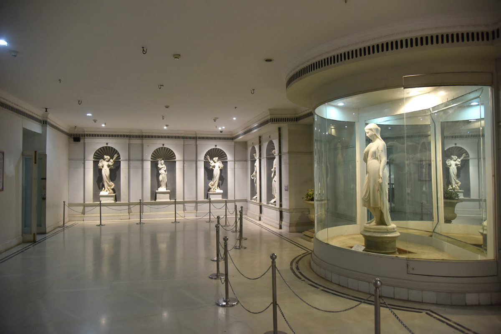
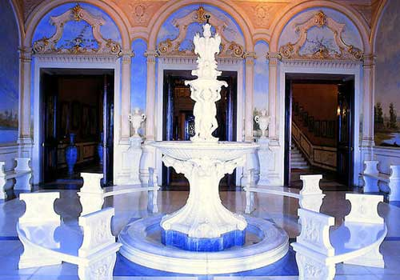

|
 | |
 |
|---|
Situated on the southern banks of Musi River, the Salarjung Museum has a unique distinction as the third largest museum in India and has a worldwide fame for its biggest one-man collections of antiques. It is widely known in India for its prized collections dating back to different civilizations. Nawab Mir Yousuf Ali Khan Salar Jung III, the former Prime Minister of the 7th Nizam of Hyderabad, spent most of his income over a period of thirty-five years to gather such priceless collections, which according to historians was his intense passion.
The collections that was left behind in his ancestral Diwan Deodi palace were exhibited earlier as a private museum that was inaugurated by the then PM of India Jawaharlal Nehru in 1951. Later in the year 1968, the museum was shifted to its current location at Afzalgunj. The renowned museum is now administered by a Board of Trustees which also includes Governor of Telangana as an ex-officio chairperson as per the Salar Jung Museum Act of 1961.
The Museum is a royal treat for art collectors with its 43,000 art objects and 50,000 priceless books and manuscripts. The collections range from Indian Art, Middle Eastern Art, European Art, Far Eastern Art, Children Art etc. in addition to a founders gallery and a rare manuscript division. Indian Art forms include collections of stone sculptures, jade carvings, painted textiles, bronze images, miniature paintings, woodcarvings, modern art, textiles, metal-ware, arms & armor, ivory carvings etc. Middle Eastern Art houses an exquisite collection of carpets, glass, furniture, metal-ware, lacquer etc. from Arabia, Persia, Syria, and Egypt. Collection of Far Eastern Art covers lacquer ware, porcelain, enamel, bronze, embroidery, wood & inlay work, paintings from Tibet, China, Japan, Nepal and Thailand etc. Oil and watercolor paintings also constitute an important part of the European Collection.
It also houses the world famous statue of Veiled Rebecca and Marguerite and Mephistopheles, a fine collection of jade, daggers owned by Queen Noor Jahan, Emperors Shah Jahan, Aurangzeb’s sword and other timeless masterpieces. The museum is a semicircular shaped building with 38 galleries spread across two floors. The ground floor covers 20 galleries while the first floor has 18 of them. The exhibits covering different subjects are shown at separate galleries.
Salarjung Museum, located close to Hyderabad High Court, is at a distance of nearly 5 km from the heart of Hyderabad. Situated on the banks of Musi River, it is accessible easily by road.
All days of the week except Friday : 10:00 AM - 5:00 PM